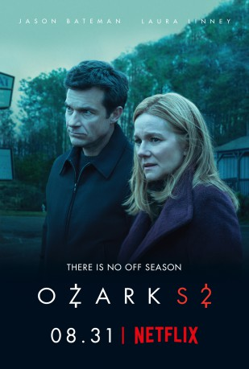

")
 
 IMDB-Wertung: 8.3 / 10
IMDB-Wertung: 8.3 / 10  Metascore:
Metascore: 
Ein Finanzberater zieht mit seiner Familie aus Chicago in die Ozarks in Missouri. Im Kampf gegen einen Drogenbaron muss er in fünf Jahren 500 Mio. US-Dollar waschen.
Jahr: 2017
Dauer: 57 Minuten
FSK: 16
Land: USA Studio: NetflixTonspuren:
Untertitel:
Auflösung: 720p (1280x640) Größe: 867 MB
Genre: Thriller, Drama, Krimi, TV-Serie
Regisseur:  Jason Bateman, Andrew Bernstein, Ellen Kuras, Daniel Sackheim, Phil Abraham
Jason Bateman, Andrew Bernstein, Ellen Kuras, Daniel Sackheim, Phil Abraham
Drehbuch: Bill Dubuque, Mark Williams, Paul Kolsby, Martin Zimmerman, Ning Zhou
Soundtrack:
Darsteller:
 Jason Bateman als Martin 'Marty' Byrde, 21 episodes, 2017-2019
Jason Bateman als Martin 'Marty' Byrde, 21 episodes, 2017-2019 Laura Linney als Wendy Byrde, 21 episodes, 2017-2019
Laura Linney als Wendy Byrde, 21 episodes, 2017-2019 Julia Garner als Ruth Langmore, 21 episodes, 2017-2019
Julia Garner als Ruth Langmore, 21 episodes, 2017-2019 Jason Butler Harner als Roy Petty, 20 episodes, 2017-2018
Jason Butler Harner als Roy Petty, 20 episodes, 2017-2018 Peter Mullan als Jacob Snell, 20 episodes, 2017-2018
Peter Mullan als Jacob Snell, 20 episodes, 2017-2018 Lisa Emery als Darlene Snell, 20 episodes, 2017-2018
Lisa Emery als Darlene Snell, 20 episodes, 2017-2018 Jordana Spiro als Rachel, 19 episodes, 2017-2018
Jordana Spiro als Rachel, 19 episodes, 2017-2018 Charlie Tahan als Wyatt Langmore, 17 episodes, 2017-2018
Charlie Tahan als Wyatt Langmore, 17 episodes, 2017-2018 Trevor Long als Cade, 13 episodes, 2017-2018
Trevor Long als Cade, 13 episodes, 2017-2018 Harris Yulin als Buddy Dieker, 12 episodes, 2017-2018
Harris Yulin als Buddy Dieker, 12 episodes, 2017-2018 Esai Morales als Del, 10 episodes, 2017
Esai Morales als Del, 10 episodes, 2017 Michael Mosley als Mason Young, 9 episodes, 2017-2018
Michael Mosley als Mason Young, 9 episodes, 2017-2018 Kevin L. Johnson als Sam Dermody, 9 episodes, 2017-2018
Kevin L. Johnson als Sam Dermody, 9 episodes, 2017-2018 Robert C. Treveiler als Sheriff Nix, 9 episodes, 2017-2018
Robert C. Treveiler als Sheriff Nix, 9 episodes, 2017-2018 Darren Goldstein als Charles Wilkes, 8 episodes, 2018
Darren Goldstein als Charles Wilkes, 8 episodes, 2018 Christopher James Baker als Boyd Langmore, 7 episodes, 2017
Christopher James Baker als Boyd Langmore, 7 episodes, 2017 Michael Tourek als Ash, 6 episodes, 2017-2018
Michael Tourek als Ash, 6 episodes, 2017-2018 Janet McTeer als Helen Pierce, 6 episodes, 2018
Janet McTeer als Helen Pierce, 6 episodes, 2018 Nelson Bonilla als Nelson, 5 episodes, 2018
Nelson Bonilla als Nelson, 5 episodes, 2018 Sandy Givelber als Senator, 4 episodes, 2018
Sandy Givelber als Senator, 4 episodes, 2018 John Bedford Lloyd als Frank Cosgrove, 3 episodes, 2018
John Bedford Lloyd als Frank Cosgrove, 3 episodes, 2018 Damian Young als Jim, 3 episodes, 2018
Damian Young als Jim, 3 episodes, 2018 Adam Boyer als Bobby Dean, 3 episodes, 2017
Adam Boyer als Bobby Dean, 3 episodes, 2017 Sharon Blackwood als Eugenia Dermody, 2 episodes, 2017
Sharon Blackwood als Eugenia Dermody, 2 episodes, 2017 Jill Jane Clements als Records Clerk, 2 episodes, 2017
Jill Jane Clements als Records Clerk, 2 episodes, 2017 Nancy De Mayo als Elena Del Rio, 2 episodes, 2017-2018
Nancy De Mayo als Elena Del Rio, 2 episodes, 2017-2018 Jackson Beals als Brock Mercer, 2 episodes, 2018
Jackson Beals als Brock Mercer, 2 episodes, 2018 Jim Gleason als Russell Hodges, 2 episodes, 2018
Jim Gleason als Russell Hodges, 2 episodes, 2018 Keith Flippen als Principal, 2 episodes, 2017-2018
Keith Flippen als Principal, 2 episodes, 2017-2018 Patti Schellhaas als Art Gallery Lady, 2 episodes, 2017-2018
Patti Schellhaas als Art Gallery Lady, 2 episodes, 2017-2018Datei: X:\HD-Serien\Ozark\Ozark S01\Ozark S01E01.mkv seit 21.03.2019
Festplatte: HD Serien(I-ST)
 Es gibt insgesamt 182 Filme in der Gruppe 'HD-Serien'
Es gibt insgesamt 182 Filme in der Gruppe 'HD-Serien'